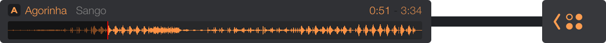
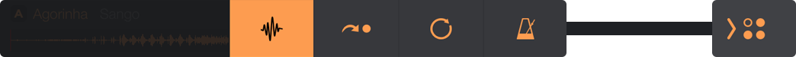
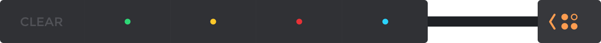
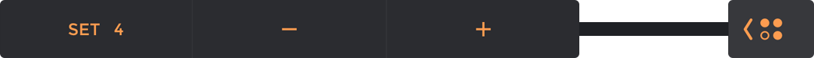
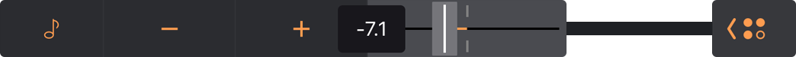
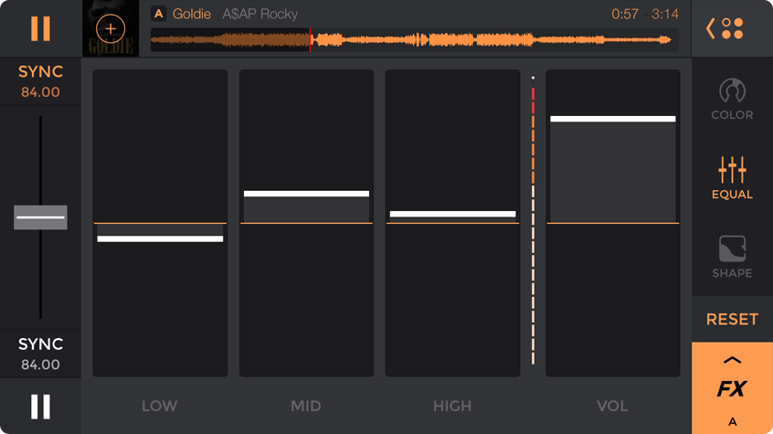
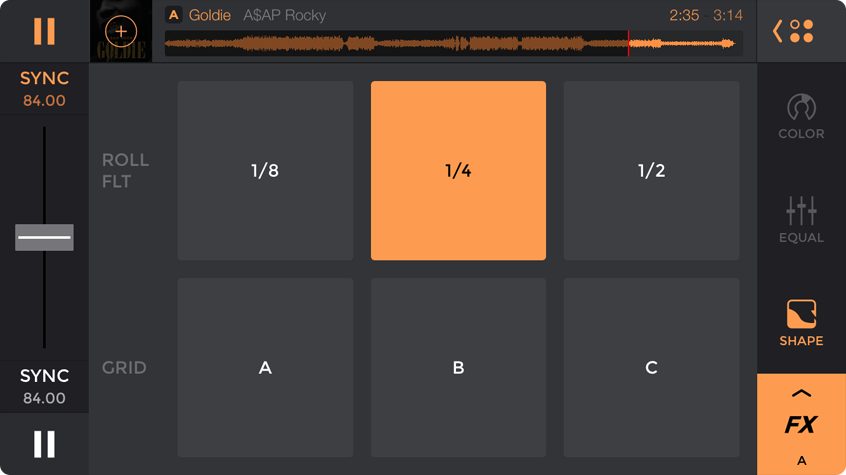

The goal of this app was to bring a lot of features from professional mixing controlers like the DDJ-SX into the edjing app familly. I worked as a DJ during my free time from 2014 to 2016 and I had the pleasure to work on every aspect of this project, from artistic direction to user experience and design to working closely to the development team to bring the closest professional DJ experience on mobile.
First of all, the main idea was to give the old edjing spectrum a lift up. The goal is to provide the user the most visibility on the different frequencies their tracks are made of, the darker representing the basses, the lighter the highs and trebble. Easily seeing the bass kicking helps a lot when it comes to cueing a song over an already playing one.
80%
I had to allow a minimum screen space of 80% to the two spectrums in order to easily cue a song just by seeing the waveforms, to accurately use the freeze function and to be more precise when you’ll need to adjust the beatgrids to the songs.
The top and bottom of the screen are reserved to the tracks informations, Title, artist name, duration, a view of the entire waveform which is clickable if you want to go to a specific moment in the song or just want to replay it in a single tap.
Each plus icon over the covers get you to the library, from here you can access to different categories such as tracks, playlists, artists, albums, your mixes and a dedicated edjing folder.
This menu is a toggle which opens up over the track’s infos, so when editing tempo or setting cue points you can still see the spectrum and use the effects.
The main view gives you the track’s title, artist name, a quick view of the fool spectrum and the track timing informations.
When you tap the button on the right, the menu toggle up and let you choose which top view you want to use, so you can replace the track’s infos view with the hot cue setting menu, the loop menu or the tempo editing menu. Once you tap on any of the icons representing the menus, the overlay toggle and the view is changed to your choice.
The hot cue menu is separated into 5 section, you have 4 hot cues per tracks available and a function to erase them.
The loop menu let you set a loop from 1/32 of a beat to a 16 beats duration loop.
The tempo menu let’s you choose if the song should stick to it’s key or if the key evolve with the bpm changes.
Each tracks of the app has an FX menu attached to it, in here you can find every tools you need to colorize and shape your songs for upcoming transitions. When opening the track’s A menu, it toggles over the B track informations, so you are able to use loops, hot cues and equalizer onto the desired tracks at the same time.
Change all frequencies values and the gain volume as you like. When making a change from default value, a reset button appear in the right menu and will remain on screen as a lock icon, so whenever you're applying any change to the color of your songs with the effects, you can disable them in just one tap.
This section is divided into 6 pads letting you apply roll filters or predefined beatgrid effects on your track.
I hope you liked it, there's more to see, I made the official website for this application too if you want to see more of it (the website is a little bit old, it was made in 2015 so don't mind the graphics), or you can also download the lite edition for free on the app store.